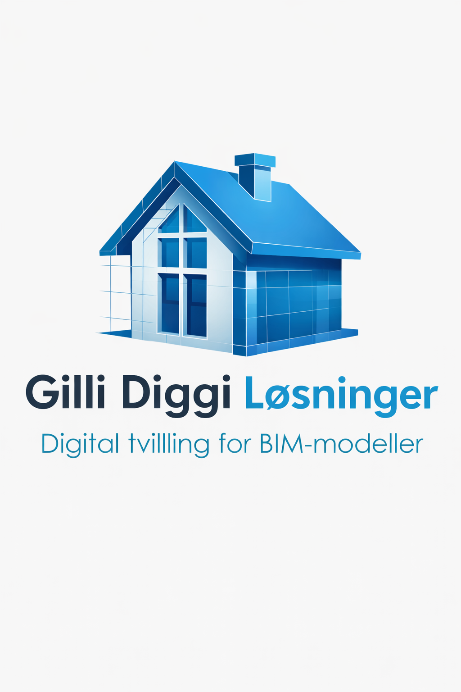

Digital tvilling for BIM-modeller
Vår løsning er utviklet for å kontrollere om BIM-modeller oppfyller krav til universell utforming i TEK17. Med kontroll direkte i Revit blir det enklere å oppdage avvik tidlig og styrke kvalitetssikringen i prosjekteringen.

Gilli Diggi Løsninger utvikler digitale verktøy som forenkler kvalitetssikring av BIM-modeller og gjør kontroll av universell utforming mer effektiv.
Funksjoner i vår løsning
Avvik vises direkte i BIM-modellen, slik at du raskt ser hvor krav ikke er oppfylt.
Få oversikt over alle kontrollerte elementer med status på hvert punkt og grunnlag for dokumentasjon.
Løsningen er rettet mot den norske byggforskriften TEK17 og krav til universell utforming.
Analysen kjøres direkte i Revit uten behov for eksport til andre programmer.
Hvert avvik knyttes til spesifikke elementer og rom i modellen for enklere oppfølging.
Oppdag mangler tidlig og reduser risikoen for kostbare endringer senere i prosjektet.
Ta kontakt for å se hvordan løsningen kan bidra til bedre kontroll og tydeligere kvalitetssikring av universell utforming i BIM-modeller.
Slik fungerer det
Åpne BIM-modellen du ønsker å kontrollere direkte i Revit.
Start kontrollen og analyser modellen opp mot relevante TEK17-krav.
Feil og mangler markeres visuelt slik at de er enkle å identifisere.
Bruk resultatene videre i prosjekteringen og i kvalitetssikringen av modellen.
Hvem, hva og hvor
Gilli Diggi Løsninger utvikler en løsning for kvalitetssikring av BIM-modeller med fokus på universell utforming og tydelig kontroll i prosjekteringsfasen.
Vi utvikler et verktøy som kontrollerer om en BIM-modell oppfyller krav til universell utforming i TEK17, og viser avvik direkte i modellen.
Løsningen brukes i Revit, slik at kontrollen skjer direkte i arbeidsflyten der modellen faktisk prosjekteres og bearbeides.
Ofte stilte spørsmål
Løsningen er utviklet for bruk i Revit og er tenkt tilpasset Revit 26 og nyere versjoner.
Fokus er på krav knyttet til universell utforming, som tilgjengelighet, passasjebredder og andre relevante kontrollpunkter i TEK17.
Analysen er utformet for å kunne kjøres raskt i prosjekteringsfasen slik at avvik oppdages tidlig.
Ja, resultatene er ment å kunne gi et godt grunnlag for videre dokumentasjon og oppfølging.
Kontrollen er tenkt utført direkte i Revit-modellen som en del av den vanlige BIM-arbeidsflyten.
Kontakt oss
siri.aasheim@gillidiggi.com
ingvild.andersen@gillidiggi.com
marius.henriksen@gillidiggi.com
margrethe.vesterheim@gillidiggi.com
johan.snefjella@gillidiggi.com
Digital tvilling for BIM-modeller med fokus på automatisk kontroll av universell utforming i henhold til TEK17 direkte i Revit.